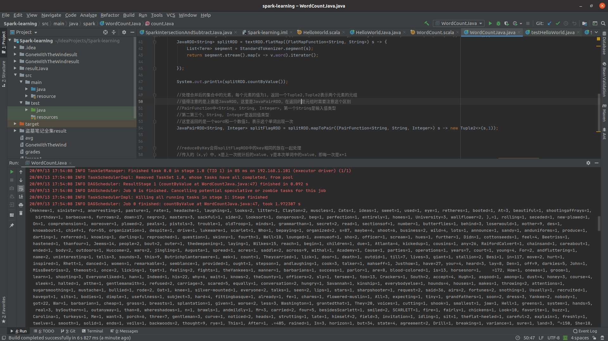

Spark中英文单词统计
Spark单词统计，是spark的经典案例之一，对于原生的英文单词统计，只需要按照空格对句子进行划分即可.
英文单词统计
1 | package spark; |
英文统计不赘述．词频如下如

中文单词统计
中文分词一直是中文nlp处理的难点之一，在此选择Hanlp分词器,使用也可以直接参考Hanlp分词器.
优化后代码如下:1
2
3
4
5
6
7
8
9
10
11
12
13
14
15
16
17
18
19
20
21
22
23
24
25
26
27
28
29
30
31
32
33
34
35
36
37
38
39
40
41
42
43
44
45
46
47
48
49
50
51
52
53
54
55
56
57
58
59
60
61package spark;
import com.hankcs.hanlp.seg.common.Term;
import com.hankcs.hanlp.tokenizer.StandardTokenizer;
import org.apache.commons.lang.StringUtils;
import org.apache.spark.SparkConf;
import org.apache.spark.api.java.JavaPairRDD;
import org.apache.spark.api.java.JavaRDD;
import org.apache.spark.api.java.JavaSparkContext;
import org.apache.spark.api.java.function.FlatMapFunction;
import org.apache.spark.api.java.function.Function2;
import org.apache.spark.api.java.function.MapFunction;
import org.apache.spark.api.java.function.PairFunction;
import scala.Tuple2;
import java.util.Arrays;
import java.util.Iterator;
import java.util.List;
public class WordCountJava {
public static void main(String[] args){
SparkConf conf = new SparkConf().setMaster("local").setAppName("WordCountJava");
JavaSparkContext sc = new JavaSparkContext(conf);
countJava(sc);
}
public static void countJava(JavaSparkContext sc){
String filename = "GoneWithTheWind";
//设置数据的路径
JavaRDD<String> textRDD = sc.textFile("./"+filename);
//将文本数据按行处理，每行按空格拆成一个数组,flatMap会将各个数组中元素合成一个大的集合
//这里需要注意的是FlatMapFunction中<String, String>,第一个表示输入，第二个表示输出
//与Hadoop中的map-reduce非常相似
JavaRDD<String> splitRDD = textRDD.flatMap((FlatMapFunction<String, String>) s -> {
List<Term> segment = StandardTokenizer.segment(s);
return segment.stream().map(v -> v.word).iterator();
});
System.out.println(splitRDD.countByValue());
//处理合并后的集合中的元素，每个元素的值为1，返回一个Tuple2,Tuple2表示两个元素的元组
//值得注意的是上面是JavaRDD，这里是JavaPairRDD，在返回的是元组时需要注意这个区别
//PairFunction中<String, String, Integer>，第一个String是输入值类型
//第二第三个，String, Integer是返回值类型
//这里返回的是一个word和一个数值1，表示这个单词出现一次
JavaPairRDD<String, Integer> splitFlagRDD = splitRDD.mapToPair((PairFunction<String, String, Integer>) s -> new Tuple2<>(s,1));
//reduceByKey会将splitFlagRDD中的key相同的放在一起处理
//传入的（x,y）中，x是上一次统计后的value，y是本次单词中的value，即每一次是x+1
JavaPairRDD<String, Integer> countRDD = splitFlagRDD.reduceByKey((Function2<Integer, Integer, Integer>) (integer, integer2) -> integer+integer2);
//将计算后的结果存在项目目录下的result目录中
countRDD.saveAsTextFile("./"+filename+"result");
}
}
本实例程序所有的代码以及预料库可以从如下链接获取所有代码以及语料-maven工程